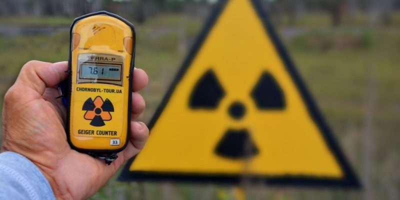

Contaminación
Apartados de Contaminación
Contaminación Térmica
Podemos definir la contaminación térmica de una manera más coloquial como un proceso que modifica la temperatura del medio ambiente de manera perjudicial. Esta modificación puede tratarse tanto de una subida como de una bajada de la temperatura, lo que puede afectar negativamente a la calidad del aire, del agua y también a los seres vivos.
Es más habitual que la contaminación térmica se manifieste en el medio acuático, debido a que en el aire este tipo de contaminación puede dispersarse más rápidamente. Si bien, tampoco está exenta de sufrirla, por ejemplo, mediante aparatos de aire acondicionado que emiten calor a la calle.
Además, la elevada inercia térmica del agua, la convierte en un elemento idóneo para almacenar el calor.
REGRESAR
Contaminación del agua
Uno de los problemas más urgentes que tiene nuestro planeta es reducir la contaminación del agua. Además, uno de los mayores problemas que afrontará la humanidad en un futuro próximo será la escasez de agua potable debido al cambio climático y al aumento de los períodos de sequías. Esto sumado a los altos niveles de contaminación que están sufriendo las fuentes de agua están provocando que dispongamos de menos agua segura para el consumo.
El ser humano lleva décadas provocando, con su actividad, un impacto ambiental al que, si no ponemos fin cuanto antes, el daño a los ecosistemas y medio natural será irreversible.

Contaminación del aire
La contaminación atmosférica consiste en la presencia de materias o formas de energía en el aire que pueden suponer un riesgo, daño o molestia de diferente gravedad para los seres vivos. Entre las consecuencias directas de la contaminación atmosférica, se podría destacar el desarrollo de enfermedades y afecciones en los seres humanos y la biodiversidad, así como la pérdida de visibilidad en zonas de grandes concentraciones o la aparición de olores desagradables.
La producción, el desarrollo del transporte y el uso de a partir de la Revolución Industrial ha disparado los niveles de dióxido de carbono y otros gases contaminante en la atmósfera. Esto ha provocado que la contaminación en el aire sea ya un problema ambiental global.

Contaminación Ambiental
La contaminación no es más que un aliciente que hace que la crisis climática avance sin control. Nos referimos a contaminación ambiental al ingreso de sustancias químicas nocivas en un entorno determinado. Este fenómeno repercute en el equilibrio de dicho entorno y lo convierte en un ambiente inseguro.
El medio ambiente y sus ecosistemas sufren de manera directa los perjudiciales efectos. Y es que la contaminación ambiental es una alternación negativa del estado natural de los seres vivos que habitan el planeta. Las causas de este tipo de contaminación dependen de varios agentes que varían según el ecosistema al que afecten.
Contaminación radioactiva
Se conoce como contaminación radiactiva o radioactiva a la dispersión en el medio ambiente de materiales químicos inestables, capaces de emitir partículas electromagnéticas dañinas, en un fenómeno físico-químico conocido como radiación ionizante.
Este tipo de materiales radiactivos pueden darse en la naturaleza en condiciones muy específicas y poco frecuentes, pero mayormente son fruto de las reacciones químicas artificiales llevadas a cabo en instalaciones humanas, como plantas nucleares de generación eléctrica o laboratorios de experimentación científicas

Integrantes
- Damian Mysrai Puc Flores
- Saul Emir Poot Batun
- Yerick Haziel Cocom Kauil
- Azahel de Jesús May Cocom